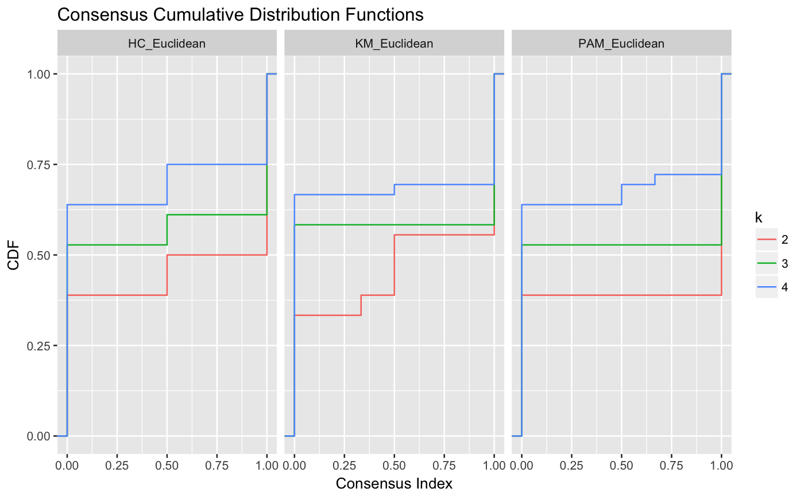
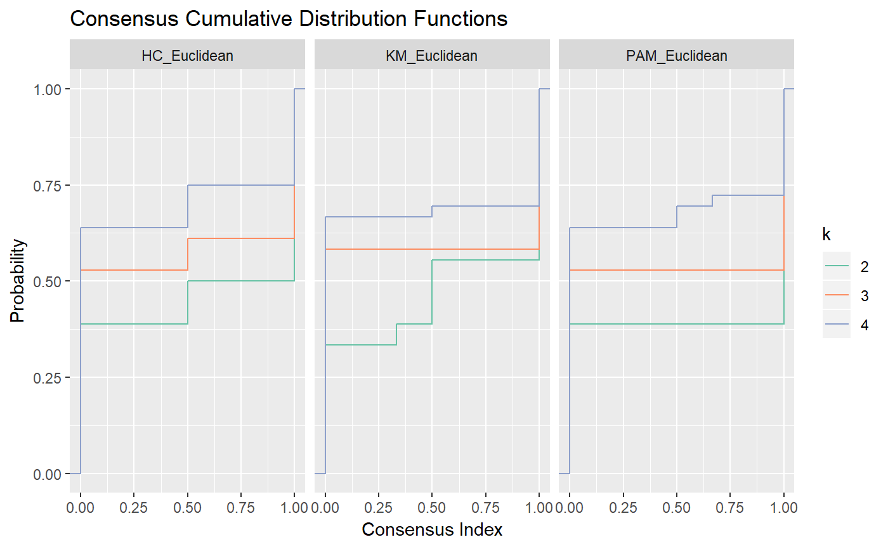
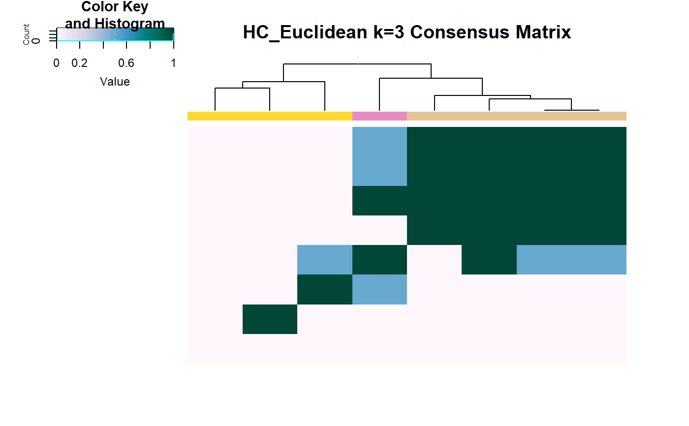
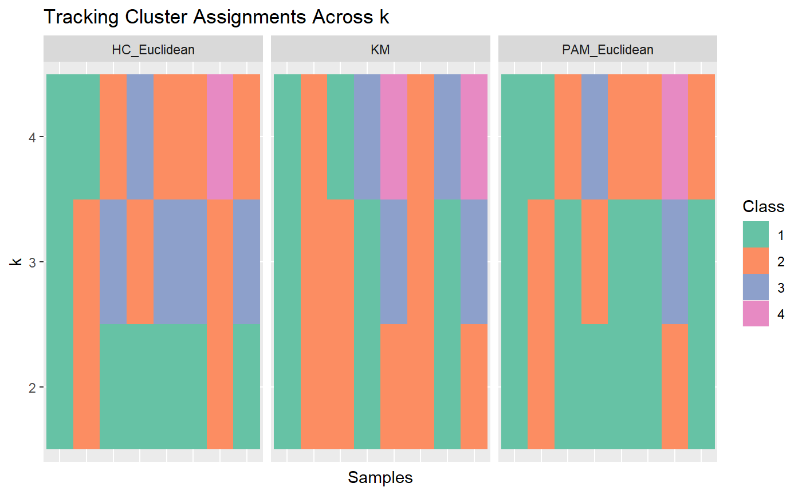

Graph cumulative distribution function (CDF) graphs, relative change in area under CDF curves, heatmaps, and cluster assignment tracking plots.
graph_cdf(mat) graph_delta_area(mat) graph_heatmap(mat, main = NULL) graph_tracking(cl) graph_all(x)
Arguments
| mat | same as |
|---|---|
| main | heatmap title. If |
| cl | same as |
| x | an object from |
Value
Various plots from graph_*{} functions. All plots are
generated using ggplot, except for graph_heatmap, which uses
NMF::aheatmap(). Colours used in graph_heatmap and graph_tracking
utilize RColorBrewer::brewer.pal() palettes.
Details
graph_cdf plots the CDF for consensus matrices from different algorithms.
graph_delta_area calculates the relative change in area under CDF curve
between algorithms. graph_heatmap generates consensus matrix heatmaps for
each algorithm in x. graph_tracking tracks how cluster assignments change
between algorithms. graph_all is a wrapper that runs all graphing
functions.
References
https://stackoverflow.com/questions/4954507/calculate-the-area-under-a-curve
Author
Derek Chiu
Examples
# Consensus clustering for 3 algorithms library(ggplot2) set.seed(911) x <- matrix(rnorm(80), ncol = 10) CC1 <- consensus_cluster(x, nk = 2:4, reps = 3, algorithms = c("hc", "pam", "km"), progress = FALSE) # Plot CDF p <- graph_cdf(CC1)# Change y label and add colours p + labs(y = "Probability") + stat_ecdf(aes(colour = k)) + scale_color_brewer(palette = "Set2")# Delta Area p <- graph_delta_area(CC1)# Heatmaps with column side colours corresponding to clusters CC2 <- consensus_cluster(x, nk = 3, reps = 3, algorithms = "hc", progress = FALSE) graph_heatmap(CC2)# Track how cluster assignments change between algorithms p <- graph_tracking(CC1)